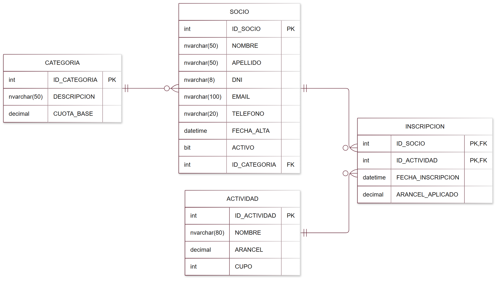
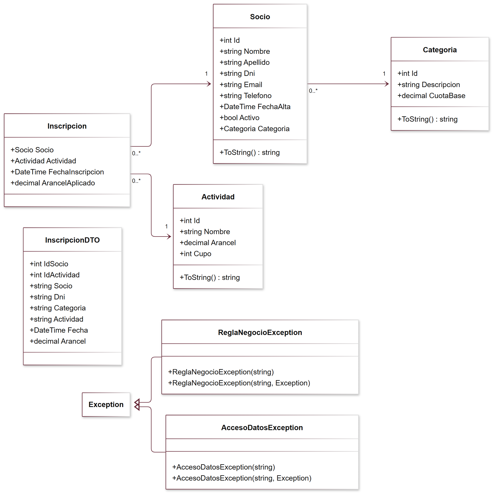
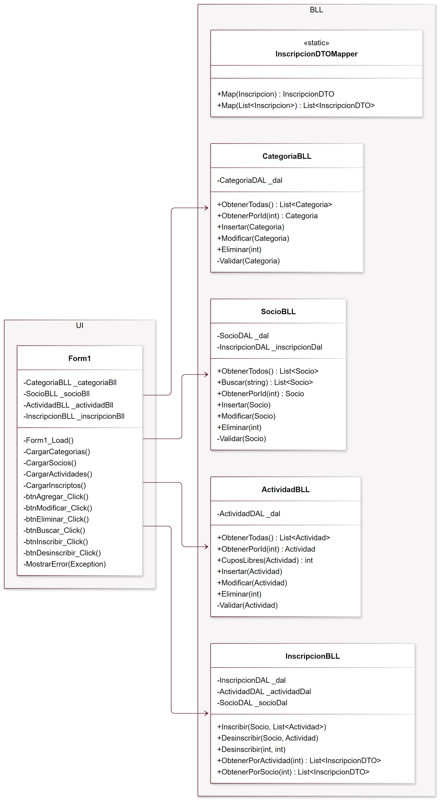
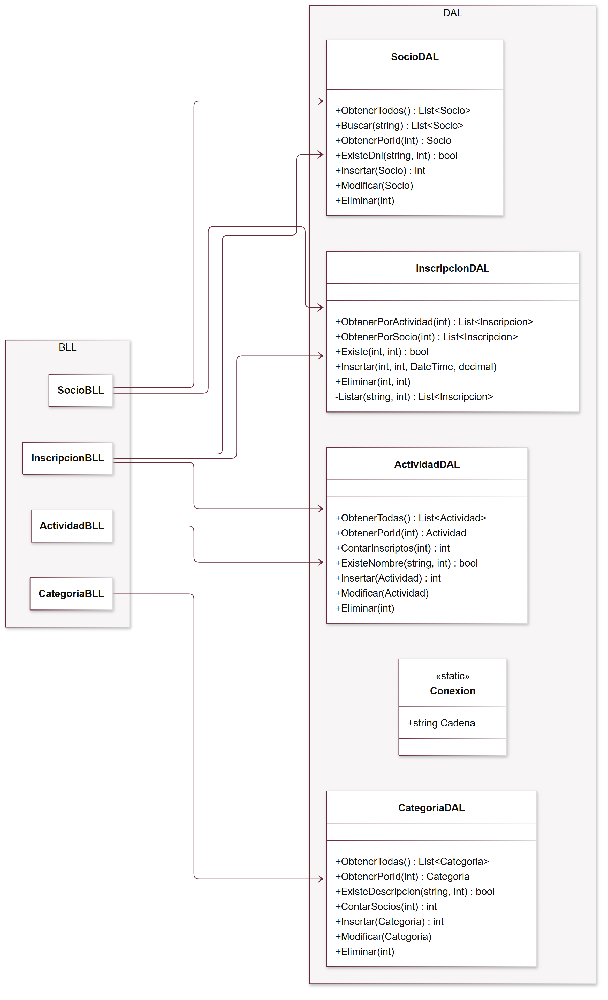
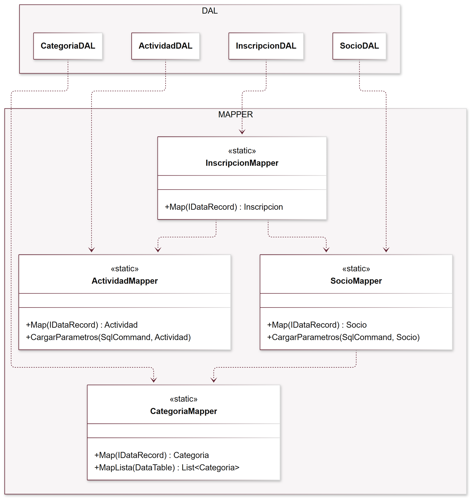
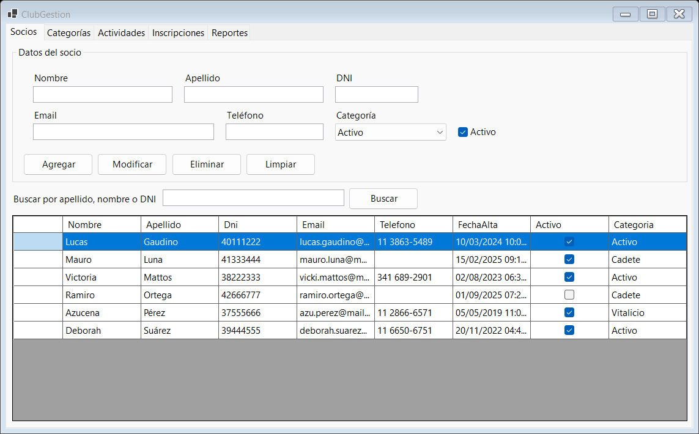
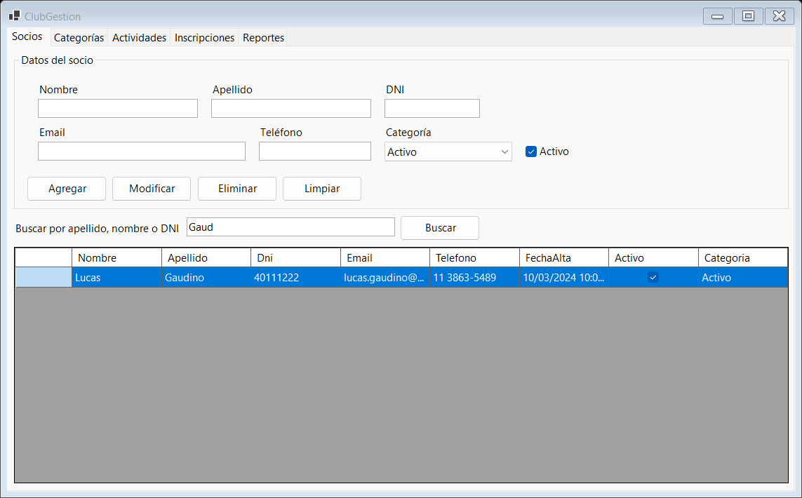
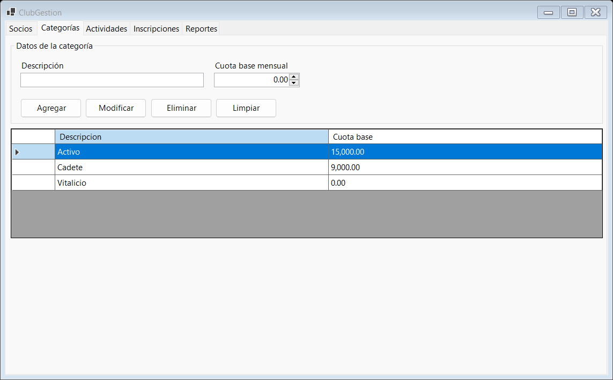
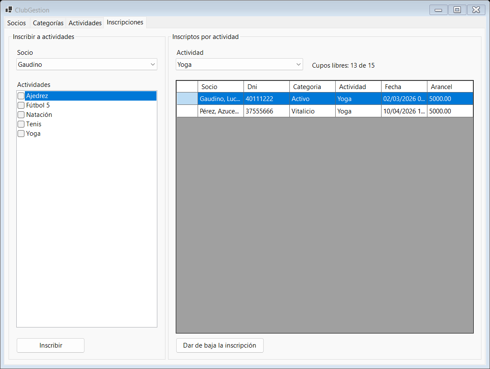

| Materia | Lenguajes de Última Generación (T4-17-14) |
| Profesor | Gonzalo Arigós |
| Comisión | 2-B |
| Cuatrimestre | 2° cuatrimestre de 2026 |
| Fecha de entrega | 15 de noviembre de 2026 |
| Repositorio | github.com/lucasgaudino16-dotcom/ClubGestion |
ClubGestion es una aplicación de escritorio para la secretaría de un club de barrio. Sirve para llevar los socios, las categorías de socio, las actividades del club y las inscripciones de los socios a esas actividades.
El club tiene socios y ofrece actividades como fútbol, natación o yoga. Cada socio paga una cuota por mes según su categoría y además paga un arancel por cada actividad en la que se anota. Las actividades tienen cupo porque los lugares son limitados.
Hasta ahora la secretaría anota todo en papel y en planillas. Eso trae tres problemas:
El sistema no deja anotar a un socio dado de baja, pasarse del cupo, anotar dos veces al mismo socio en la misma actividad, repetir un DNI ni borrar datos que ya tienen inscripciones.
Lo usa el empleado administrativo de la secretaría del club. No es una persona técnica, por eso la aplicación es una sola ventana con pestañas y los mensajes están escritos de forma simple, por ejemplo "No quedan cupos en Natación".
El sistema trabaja con cuatro cosas: categorías, socios, actividades e inscripciones.
| Concepto | Qué es | Qué se guarda |
|---|---|---|
| Categoría | El tipo de socio. De la categoría depende la cuota mensual. Las que vienen cargadas son Activo, Cadete y Vitalicio. | Descripción y cuota base. |
| Socio | La persona asociada al club. | Nombre, apellido, DNI, email, teléfono, fecha de alta, si está activo y su categoría. |
| Actividad | Lo que ofrece el club, por ejemplo Fútbol 5, Natación, Yoga, Tenis o Ajedrez. | Nombre, arancel y cupo. |
| Inscripción | El registro de que un socio se anotó en una actividad. | Socio, actividad, fecha de inscripción y arancel aplicado. |
Una categoría tiene muchos socios y cada socio tiene una sola categoría. Es una relación de uno a muchos. Si se cambia la cuota de una categoría, cambia para todos los socios de esa categoría.
Un socio puede estar en varias actividades y una actividad tiene varios socios. Es una relación de muchos a muchos, y para guardarla está la inscripción, que une un socio con una actividad.
La inscripción guarda además la fecha en que se anotó el socio y el arancel que tenía la actividad en ese momento. Así, si después el club aumenta el precio, los que ya estaban anotados siguen figurando con lo que pagaron. Por ejemplo, si Natación pasa de 8500 a 10000, las inscripciones anteriores siguen en 8500.
En total son cuatro tablas, con una relación de uno a muchos y una de muchos a muchos.
Todas las reglas se controlan en la capa de negocio (BLL) antes de guardar en la base. Si una regla no se cumple, el sistema no guarda nada y muestra un mensaje con el motivo.
La transacción principal del sistema es inscribir a un socio en varias actividades juntas.
El usuario tilda, por ejemplo, Fútbol 5, Natación y Yoga y aprieta Inscribir. Son tres inscripciones, pero para el club es un solo trámite. Si Yoga no tiene más cupo, no se guarda ninguna de las tres y el sistema avisa cuál fue la actividad que falló. O se guardan todas o no se guarda ninguna.
Esto está hecho en el método Inscribir de InscripcionBLL con un TransactionScope. El método recorre las actividades elegidas, controla el cupo de cada una y la inserta. Si alguna regla falla se lanza una ReglaNegocioException, no se llega a ejecutar scope.Complete() y SQL Server deshace lo que se había insertado hasta ese momento. Cada método de la DAL abre y cierra su propia conexión, y como todos usan la misma cadena de conexión quedan dentro de la misma transacción.
El resto de las operaciones que escriben en la base (altas, modificaciones y bajas de socios, categorías, actividades e inscripciones) también se ejecutan dentro de un TransactionScope en la BLL.
La solución está dividida en cinco proyectos, uno por capa.
| Capa | Qué hace |
|---|---|
| UI (proyecto ClubGestion, Windows Forms) | Tiene las pantallas. Toma lo que carga el usuario, llama a la BLL y muestra los resultados y los mensajes. No tiene reglas de negocio. |
| BLL | Tiene las reglas de negocio y las transacciones. Valida los datos antes de llamar a la DAL. |
| DAL | Se conecta a la base de datos con ADO.NET. Hace las consultas, altas, modificaciones y bajas usando SqlParameter. |
| MAPPER | Convierte las filas que devuelve la base en objetos. |
| Entity | Tiene las clases Socio, Categoria, Actividad e Inscripcion y las dos excepciones propias. |
Cada capa usa solamente a la que tiene abajo. La UI llama a la BLL, la BLL llama a la DAL y la DAL usa los mappers. La UI nunca llama directo a la DAL. De esta forma cada regla de negocio está escrita en un solo lugar.
La DAL atrapa la SqlException y lanza una AccesoDatosException con un mensaje más claro, por ejemplo "Error al consultar los socios", y guarda adentro el error original. La BLL lanza una ReglaNegocioException cuando no se cumple una regla, por ejemplo "No quedan cupos en Yoga". La UI atrapa las dos y las muestra en un cartel. Las de negocio salen como advertencia y las demás como error, con el detalle técnico abajo.
La base es SQL Server (LocalDB). La cadena de conexión está en App.config y se lee en un solo lugar, la clase Conexion de la DAL. En las entidades la clave foránea es un objeto y no un número: Socio tiene una propiedad Categoria, e Inscripcion tiene un Socio y una Actividad.

| Tabla | Clave primaria | Claves foráneas | Otras restricciones |
|---|---|---|---|
| CATEGORIA | ID_CATEGORIA (identity) | No tiene | DESCRIPCION no se repite. CUOTA_BASE mayor o igual a 0. |
| SOCIO | ID_SOCIO (identity) | ID_CATEGORIA, a CATEGORIA | DNI no se repite. FECHA_ALTA y ACTIVO tienen valor por defecto. TELEFONO acepta nulos. |
| ACTIVIDAD | ID_ACTIVIDAD (identity) | No tiene | NOMBRE no se repite. ARANCEL mayor o igual a 0. CUPO mayor a 0. |
| INSCRIPCION | ID_SOCIO + ID_ACTIVIDAD (compuesta) | ID_SOCIO, a SOCIO. ID_ACTIVIDAD, a ACTIVIDAD | FECHA_INSCRIPCION tiene valor por defecto. |
Los importes (CUOTA_BASE, ARANCEL y ARANCEL_APLICADO) son DECIMAL(10,2).
El script script_base_de_datos.sql crea la base, las tablas y carga datos de ejemplo. Se puede ejecutar más de una vez sin que dé error.
El diagrama está dividido en cuatro partes para que se pueda leer bien. La primera muestra las entidades y las excepciones. Las otras tres muestran las clases de cada capa y a qué clases de la capa de abajo usan.

Socio tiene una Categoria, e Inscripcion tiene un Socio y una Actividad. InscripcionDTO es la clase que se usa para mostrar los inscriptos en la grilla, con los datos ya listos. Las clases de las otras capas usan estas entidades, pero esas flechas no están dibujadas en las figuras siguientes para que no queden tan cargadas.
El formulario tiene una instancia de cada clase de la BLL y no usa nada de la DAL. InscripcionBLL usa a InscripcionDTOMapper para armar la lista que se muestra en la grilla de inscriptos.

Cada clase de la BLL usa a su clase de la DAL. SocioBLL además usa a InscripcionDAL para saber si el socio tiene inscripciones, e InscripcionBLL usa a SocioDAL y a ActividadDAL. Las cuatro clases de la DAL leen la cadena de conexión de la clase Conexion.

Cada clase de la DAL usa a su mapper para convertir las filas en objetos. SocioMapper usa a CategoriaMapper para armar la categoría del socio, e InscripcionMapper usa a SocioMapper y a ActividadMapper.

script_base_de_datos.sql en SQL Server Management Studio conectado a (localdb)\MSSQLLocalDB. El script crea la base ClubGestion con datos de ejemplo.ClubGestion.sln en Visual Studio 2022 y ejecutar el proyecto ClubGestion.Data Source en ClubGestion\App.config. No hace falta volver a compilar.La aplicación es una sola ventana con cuatro pestañas: Socios, Categorías, Actividades e Inscripciones. Las tres primeras funcionan igual. Arriba está el formulario y abajo la grilla. Al hacer clic en una fila de la grilla los datos se cargan arriba para modificarlos o eliminarlos, y el botón Limpiar vacía el formulario para cargar uno nuevo.




Los avisos con ícono amarillo son reglas de negocio. El sistema no guardó nada y dice qué hay que corregir. Los avisos con ícono rojo son errores técnicos, por ejemplo que la base de datos no responde, y traen el detalle abajo del mensaje.
| Mensaje | Qué hacer |
|---|---|
| El DNI debe tener 7 u 8 dígitos, sin puntos. | Escribir el DNI solo con números. |
| Ya existe un socio con el DNI 40111222. | El socio ya está cargado. Buscarlo y modificarlo en vez de cargarlo de nuevo. |
| El socio tiene inscripciones. Dalo de baja en lugar de eliminarlo. | Destildar Activo y apretar Modificar. |
| No se puede eliminar Activo porque tiene 3 socio(s). | Pasar esos socios a otra categoría y volver a intentar. |
| La actividad ya tiene 2 inscriptos: el cupo no puede ser menor. | Poner un cupo igual o mayor a la cantidad de inscriptos. |
| No quedan cupos en Ajedrez. No se registró ninguna inscripción. | Destildar esa actividad y volver a inscribir. |
| Gaudino, Lucas ya está inscripto en Yoga. | No hay que hacer nada, ya estaba anotado. |
| El socio está dado de baja. | Volver a activarlo en la pestaña Socios antes de inscribirlo. |
| Error al consultar los socios. Detalle: Cannot open database... | La base no está disponible. Revisar que LocalDB esté funcionando y que se haya ejecutado el script. |